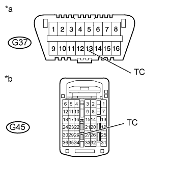
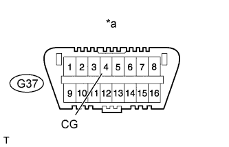
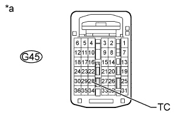

AIRBAG SYSTEM > Diagnosis Circuit |
| Condition | Waiting Time |
| Vehicle enrolled in G-BOOK system | 6 minutes |
| Vehicle not enrolled in G-BOOK system | 1 minute |
| 1.CHECK CAN COMMUNICATION SYSTEM |
Check if a CAN communication system DTC is output (Click here).
| Result | Proceed to |
| DTC is not output | A |
| DTC is output | B |
|
| ||||
| A | |
| 2.CHECK HARNESS AND CONNECTOR (DLC3 - ECM) |
|  |
Turn the engine switch off.
Disconnect the G45 connector from the ECM.
Measure the resistance according to the value(s) in the table below.
| Tester Connection | Condition | Specified Condition |
| G37-13 (TC) - G45-28 (TC) | Always | Below 1 Ω |
| *a | Front view of DLC3 |
| *b | Rear view of wire harness connector (to ECM) |
|
| ||||
| OK | |
| 3.CHECK HARNESS AND CONNECTOR (DLC3 - BODY GROUND) |
|  |
Measure the resistance according to the value(s) in the table below.
| Tester Connection | Condition | Specified Condition |
| G37-4 (CG) - Body ground | Always | Below 1 Ω |
| *a | Front view of DLC3 |
|
| ||||
| OK | |
| 4.CHECK HARNESS AND CONNECTOR (ECM - BODY GROUND) |
|  |
Measure the resistance according to the value(s) in the table below.
| Tester Connection | Condition | Specified Condition |
| G45-28 (TC) - Body ground | Always | 1 MΩ or higher |
| *a | Rear view of wire harness connector (to ECM) |
|
| ||||
| OK | ||
| ||